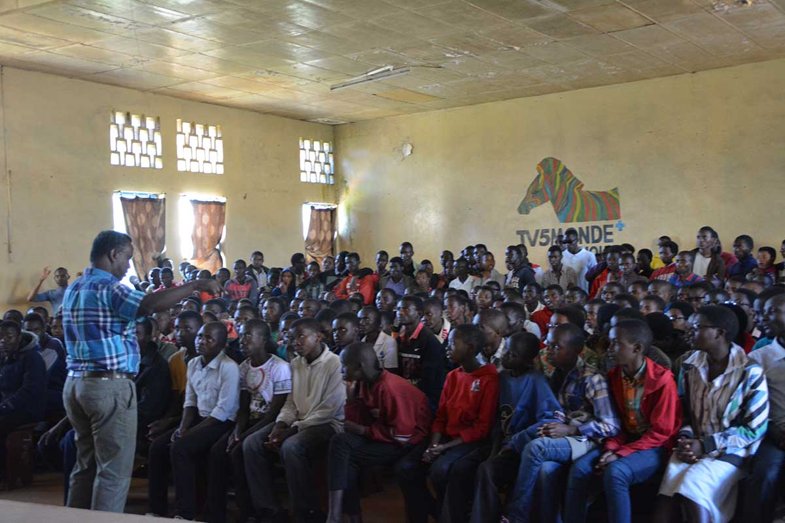

La dernière étape de la tournée cinématographique, en marge du FESTICAB a pris fin ce 13 juin 2017, au Lycée Etoile de Montagnes d’Ijenda. 60 écoles secondaires et techniques du Burundi ont reçu une séance cinéma.

Depuis la date du 28 avril 2017 se tenait une tournée cinématographique. Celle-ci est effectué par le Festival International du Cinéma et de l’Audiovisuel du Burundi (FESTICAB). Il s’agit d’une deuxième tournée que le FESTICAB réalise en collaboration avec l’appui de la Coopération Suisse.
Le but de cette tournée, « sensibiliser le maximum possible de jeunes sur les sujets sociaux auxquels ils seront confrontés dans l’avenir, des sujets qui ne figurent pas d’ailleurs sur les programmes appris en classe », explique Ngabo Léonce, Président du Festicab. « Nous apprécions le niveau d’ouverture d’esprit que nous observons chez les élèves », ajoute-t-il.
Les projections que les élèves des 60 écoles ont suivies étaient faites de 5 courts films documentaires réalisés par les Enfants Journalistes en Herbe (EJH). Après les projections, un débat suivait. Plusieurs interventions de la part des élèves ont soulevé beaucoup de questionnements comme le droit de jouer du tambour pour les femmes, les droits de la personne humaine, le modernisme et bien d’autres. Maitre Amandine Niyubahwe qui était la facilitatrice dans ces débats note que les élèves ont une compréhension commune sur l’égalité de genres.
Le 02 juin 2017, la tournée était à Bururi, le directeur du Lycée Bururi a beaucoup apprécié la tournée ainsi que le contenu de celle-ci. Mais, il a regretté que le temps imparti au projection et le débat est court vu l’importance des notions qui passent dans les vidéos montrées aux élèves sont très utiles.
Cette tournée cinématographique est effectuée par le FESTICAB, en marge de ses activités du festival. Pour cette année 2017 comme l’année précédente, l’appui financier avait été apporté par la Coopération Suisse.